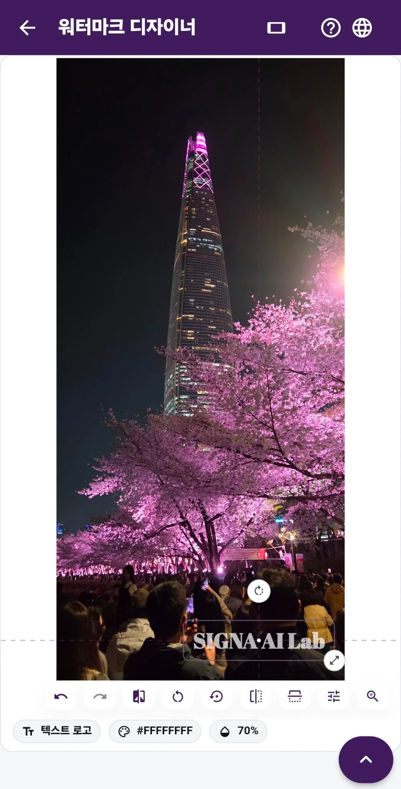

01 · PROTECT
가로든 세로든,
내 사진에 어울리는 워터마크.
워터마크 디자이너는 사진 방향에 맞춰 편집 화면을 바꿉니다. 텍스트·로고의 글꼴, 색, 크기, 투명도, 위치를 직접 조정해 보세요. 기본 기능은 무료이며 한 번에 최대 12장을 편집할 수 있습니다. 사진마다 위치를 달리하고, 마음에 드는 디자인은 저장해 다시 쓸 수 있습니다. Pro에서는 추가 글꼴을 다운로드할 수 있고, 보이지 않는 SIGNA 신호는 해당 옵션을 켰을 때만 함께 삽입됩니다.
기본 워터마크 무료 · 세로·가로 사진 편집 · 최대 12장 · 사진마다 위치 조정 · 디자인 저장 · Pro 추가 글꼴
공유 전 워터마크를 어떻게 정하면 좋을까요? →